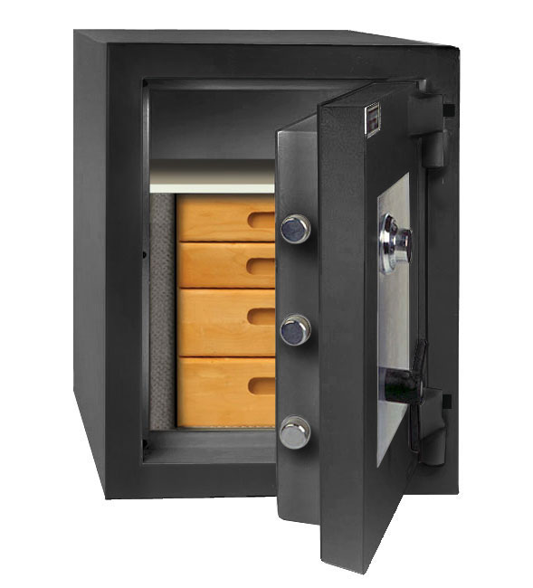

Source:
Enable Slave Window
Single Page
Update

loading presentation...
| z, ? | toggle help (this) |
| space, → | next slide |
| shift-space, ← | previous slide |
| d | toggle debug mode |
| ## <ret> | go to slide # |
| r | reload slides |
Hello everyone. I am excited and honored to be speaking here at RubyHACK.|Today I will be discussing Ruby web application security, focusing on defense in depth security controls that make it more difficult for attackers to exploit vulnerabilities, and limit the damage of vulnerabilities that are successfully exploited.
My name is Jeremy Evans. I maintain numerous ruby libraries,

the most popular of which is Sequel, the database toolkit for Ruby. I also maintain a web toolkit named Roda, and an authentication framework named Rodauth that builds on top of Sequel and Roda.
I work for a government department in Sacramento, and one of my responsibilities is operating as the department’s Information Security Officer. I am responsible for all information security for the department, including the security of our web applications, which all use Sequel, Roda, and Rodauth.
Now, Ruby web application security is a fairly wide subject area.
You want to prevent cross site scripting, usually by escaping output by default.
You want to prevent cross site request forgery, usually by using session-specific or form-specific tokens.
You want to set an appropriate Content-Security-Policy header, for detailed control over where the browser can load content from.
You also want to prevent SQL injections, by either escaping input or using prepared statements or bound variables.
All of those are important, but they are not the focus of this presentation. This presentation focuses on defense in depth approaches for Ruby web application security.
What does a defense in depth approach mean? It means that instead of just focusing on prevention, you also focus on hardening, mitigation, and containment.
No matter how hard you try to prevent vulnerabilities, you should assume that your application will still be vulnerable somewhere. Even if you use secure coding practices in your application, you are relying on libraries, and those libraries may contain vulnerabilities.
From a security perspective, it makes sense to assume that attackers will attempt to exploit these vulnerabilities.|You should have a strategy for making general classes of vulnerabilities more difficult to exploit, and for limiting the damage of vulnerabilities that are successfully exploited.
Some people talk about information security as though it were binary, in that you are either secure or insecure.
I think it is a better to think of information security similar to physical security.
Consider the safe, long used to secure physical valuables.
Safe manufacturers do not claim their safes are secure and their competitor’s safes are insecure. Instead, safes have a rating system.
A safe with a TL-15 rating can withstand 15 minutes of attack by a qualified safe cracker with good tools on a single wall of the safe before being compromised.

A safe with a TRTL-30X6 rating can withstand 30 minutes of attack by a quailfied safe cracker with highly sophisticated tools as well as as torches simultaneously on all 6 walls of the safe.

The basic idea with the security provided by a safe is that you assume the safe will be cracked given enough time. Companies that sell safes will tell you that when you buy a safe, you are buying time.|Alongside the installation of a safe is installation of monitoring equipment, so that attempts to crack the safe will alert the authorities, with the expectation that the attackers will not have adequate time to crack the safe and get away before the authorities arrive.
Applying this idea to information security, you should assume that vulnerabilities in your application will be exploited given enough time, unless you intervene.
You want to make it sufficiently difficult to exploit the vulnerabilities, and have sufficient monitoring tools in place to inform you of exploit attempts, such that after receiving notification of an exploit attempt, you can try to figure out and fix the underlying vulnerability before the vulnerability is successfully exploited.
If that is not possible, you at least want to limit the possible damage of successfully exploited vulnerabilities.
Note that increasing exploit difficulty and limiting exploit damage adds significant operational constraints. This presentation is not a secure programming todo list. Instead, it will discuss some security controls and the costs and benefits of each control.|Whether the benefits of the security control exceed the costs is highly dependent on the application, the data being stored, and how important security actually is relative to performance, maintainability, and flexibility.
The first security control I am going to discuss is using separate database users.
In most ruby web applications, the entire application is served by a single database user, usually the owner of the database, which has full access to read and modify any part of the database.
With this approach, an SQL injection vulnerability in any part of the application can result in all data in the database being at risk.
Assume you have an admin application used by employees, and a separate application that was publicly accessible, both of which access the same database. There is often a large difference in terms of the database access needed in the admin application and the database access needed in the public application.|In cases like that, using a separate database user for the public application can reduce your exposure. If an attacker exploits an SQL injection vulnerability in the public application, they can only get access to data that is explicitly granted to the public application database user.
If you are using a microservice approach with a shared database, having each microservice use a separate database user can significantly improve security. Then an SQL injection in any microservice will only grant access to the data needed for the microservice, as opposed to all data in the database.
If you are developing a majestic monolith, it is a bit more complex to use separate database users, but still possible.
The easiest way to implement separate database users in a monolith is to use a database library that supports sharding. Sharding is often used to connect to databases on different hosts, but it works just as well to connect to the same database using different user credentials.
Sequel has had sharding support for many years, and makes it easy to use a different database user for all queries in a block of code. This allows you to get most of the security benefits associated with using separate database users, while retaining the simplicity of developing a monolith.
ActiveRecord doesn’t support sharding by default, but various extensions can be used to add sharding support. Last month at RailsConf they announced that ActiveRecord 6 will support multiple databases, but I’m not sure if sharding is on the agenda.
One way to benefit from multiple database users without having to manage separate connections per user is to use security definer database functions.
By default, when you define a database function, it is configured so that function runs using the access permissions of the user who executes it. This is similar to the normal operating system model, where if I execute a program, it runs using my access permissions.
Unix offers the ability to create a program that runs using the access permissions of the user who owns the program, instead of user who executes the program. These programs are called setuid programs.|The ping program is usually a setuid program. ping is usually owned by root, and if I execute ping as a normal user, ping runs as root, at least until it can open the raw socket it needs to send packets.
Security definer database functions are the database equivalent of setuid programs, in that when a user executes the database function, the function runs with the access permissions of the user who defined the function, instead of the user who is executing the function.
This is useful if you want to give database users a specific type of access to a given table, without giving them full access to the table.
In the Rodauth authentication framework, the recommended configuration is to use two database users. The database user the application runs as does not have access to read the password hash table. The other database user owns the password hash table, and creates a security definer database function to check password hashes.|If there is an SQL injection vulnerability, an attacker cannot export the password hashes to perform an offline attack. They would be limited to using the database function to check password hashes, which is going to be multiple orders of magnitude slower.
Now that I’ve discussed the security benefits of using multiple database users, let me discuss the substantial costs.
The first issue is that database migrations become more complex. Instead of just worrying about what tables or columns to add, you need to consider what access each separate database user will need to each of the tables and columns you are adding. This requires significant upfront analysis, and for complex applications can be difficult.
To make sure that your application runs correctly when using multiple database users, you need to make sure that your tests correctly use the appropriate database user when running.|That is not usually difficult, but it can be problematic when the database user does not have appropriate access to setup the initial database states for the tests.
One possible approach to handling this is setting up the initial state as one database user, and running tests as a different database user. This is the easiest approach to implement, but it does not allow for transactional testing, since the two database users cannot see uncommitted changes made by the other user.
I prefer to use transactional testing, so I came up with a different approach, which initially felt like a hack, but works well in practice.
You create a security definer database function in only the test database, which allows other database users to run arbitrary SQL code as the database owner.|When performing database setup for the tests that the database user does not have access to, you call this database function with a string of SQL code, and the function has appropriate access, and the changes are visible to the current transaction, so transactional testing still works.
As long as you never call that database function in your application, and only call it in your tests, you get the performance and simplicity benefits of transactional testing and the reliability benefits of using the same database rights as production.
The next defense in depth security control I am going to discuss is dropping privileges, often referred to as priv-drop.
The way most ruby web applications are deployed, a regular operating system account runs the ruby web server. That account must have at least read access to all parts of the application in order to load it.
An alternative approach starts the application as root. After loading the application, but before accepting connections, the application process switches from root to an operating system account with reduced privileges.
As the application has already been loaded, it no longer needs access to the files necessary to load the application. You can actually make such files unreadable by the user the application runs as.|Many ruby applications read template files such as ERB and HAML on demand, but outside of the templates, most application files are loaded at startup and no longer need to be accessed after the application has been loaded.
Assume an attacker exploits a vulnerability in your application allowing them to read arbitrary files on the file system and display the output. The attacker can use the vulnerability to read the application’s files looking for potentially worse vulnerabilities such as SQL injection and remote code execution.|Removing the ability to read the application’s files can increase the time required to find additional vulnerabilities.
Choosing to start the application as root and drop privileges has a tradeoff. It makes you more secure when the application is running, but it makes you less secure when the application is loading.|If a developer accidentally commits code that is run during startup, which would fail for a regular user, but would succeed for the superuser, that code now succeeds.
Consider this command, and assume the TMPDIR environment variable is not defined. As a regular user, this will fail and do no damage. However, when run with superuser privileges, you now get a chance to test your backups.
Using priv-drop requires a high level of trust in the application developers and all code that your application loads during startup, such as all gems in use. While you generally have to trust the gems you are using anyway, in a priv-drop scenario, the penalty for a mistake can be much worse.
In terms of support in ruby web servers, both Unicorn and Passenger support priv-drop, but it is not currently supported by Puma.
While priv-drop by itself does not improve security greatly, if you are starting your process as root, you have an additional security option available called chroot.
Chroot allows you to change the root directory of the process. It is something only the superuser can run.|If you are going to use chroot, you should definitely priv-drop after chrooting, because you do not want your application handling requests as root. Additionally, there are ways to escape the chroot if privileges are not dropped.
When you run chroot, you pass it a directory under the current root directory. That directory now becomes the file system root directory from the perspective of the process.
Before chrooting, listing entries in the root directory shows the contents of the real root directory.
After chrooting to the application directory, listing entries in the root directory shows the contents of the application directory.|So after you chroot, you cannot access any files outside of the chroot, which significantly limits file system access.
Again, assume that an attacker has found a vulnerability in your application that allows them to read arbitrary files. Without a chroot, that would allow the attacker to read any file on the file system if the user’s access permissions allow it.
If you chroot, an attacker exploiting such a vulnerability could only read files if they were under the application’s directory. That significantly limits the severity of the vulnerability.
Now assume that the attacker finds a vulnerability that allows them to execute an arbitrary program on the server. Without a chroot, they could execute any program installed on the system, such as a shell, which would make it easier for them to attempt to compromise the system further.
Within a chroot, they would not be able to execute any program at all, because in general there are no executable programs under the application’s directory.
Chroot can prevent the exploitation of some vulnerabilities, such as arbitrary file execution.
Chroot can significantly limit the effect of exploiting some other vulnerabilities, such as arbitrary file reading and writing.
Chroot makes the exploitation of most other vulnerabilities more difficult. After locating a vulnerability, one of the first things an attacker will generally want to achieve is a remote shell, which will let them easily execute arbitrary commands on the server.|Within a chroot, obtaining a remote shell becomes more difficult. Even if it does not eliminate the attacker’s access completely, it will slow down the exploitation of the vulnerability, giving you more time to fix the problem.
While chroot offers significant security benefits, the restrictions it imposes make it challenging to implement.
Most ruby applications were not designed to be run chrooted, and many ruby applications will execute programs outside of the application’s directory.|The only way for that to work after chrooting is to move the program inside the application’s directory. If the program is dynamically linked and not statically linked, all shared libraries the program depends on must also be moved inside the chroot.
Any time you are moving programs inside the chroot, you are potentially reducing your security because you are offering the attacker additional attack surface.|You should be very restrictive about what programs are added to the chroot, and try to avoid adding programs to the chroot if possible.
If your application references any absolute paths at runtime, you should change them to relative paths. This is because the absolute path when not chrooted, such as when loading the application, will not work after the application has been chrooted.
One way to work around this is to create a directory tree under the application directory with a symlink back to the root directory. This allows the same absolute path to work in both regular and chrooted modes.
The biggest issue with using chroot is that any code that requires files at runtime will only work if the required files are already loaded or the required files are under the application directory.|There are quite a few gems that will require files at runtime, including some gems I maintain. The most common reason for requiring at runtime is when the required file is only needed by some methods, so instead of always being required, only the methods that use it will require it.
Runtime requires can be worked around by manually requiring the file before chrooting. Since the file is already required, future attempts to require it will do nothing.
Unfortunately, there is an even more insidious problem that affects chroot, and that is the use of autoload. autoload is basically a hidden runtime require, but instead of calling a method to require a file, you just need to reference a constant.
Outside of a chroot, autoload can appear to be a nice to have. If the constant is never referenced, the related file is never loaded, which can save memory.
Inside a chroot, autoload is a timebomb. If you require a library that uses autoload for any constant, it can appear to work fine, even when chrooted.|However, when a codepath that references the constant is taken at runtime, ruby tries to require the file, and since the file does not exist inside the chroot, it blows up.
The most prominent gem that uses autoload is Rack itself. Rack uses autoload all of its internal classes and modules. In many cases, these classes and modules will be loaded at application startup, which would be before you chroot.
However, there are a lot of constants that are only referenced at runtime when handling requests, such as the classes related to parsing multipart requests.|So if you chroot and do not reference the constant before chrooting, most requests work fine, but then someone tries to upload a file, and that references Rack::Multipart, which causes ruby to require the related file, which blows up because the file is not in the chroot.
Another common gem that uses autoload is the mail gem. While the mail gem does not use autoload for internal classes and modules, it does use autoload quite a bit.
In the mail gem’s defense, it does support an eager autoload method that will require all autoloaded paths, so that referencing the constants at runtime will not break things.
I mentioned that runtime requires become problematic when using chroot. This makes development environments that reload code challenging to implement.|If you want to chroot in production, you should also chroot in development, to make it easier to find possible issues caused by chrooting.
Development mode code reloading usually works by looking for modifications in certain files that have already been required.
If they detect a change in the required file, they remove the related entries from the LOADED FEATURES array, then remove the related constants from the module or class they are loaded into, and then require the file again.
I mentioned earlier that absolute paths cause problems, and entries in LOADED FEATURES are stored as absolute paths.
When chrooting, all existing entries in LOADED FEATURES that are inside the application’s directory need to be modified to strip the application directory from the start.|This is because after chrooting, the absolute path to the files in the application directory no longer have the application directory at the start of the path, since the application directory is now the root directory.
For entries in LOADED FEATURES that are outside the application directory, you would not be able to reload those if they changed, so there is not much you can do.|Most reloaders only reload application code, they do not look for changes in all required files, so you usually do not care about reloading files outside of the chroot.
Unless the development reloader has specifically been designed to support chroot, it will probably not work correctly when chrooted.
The only reloader I know of that supports chrooting is rack-unreloader, which is a gem I maintain and added chroot support to.
In addition to running your development environment chrooted, in order to make sure things run correctly when chrooted in production, your automated test suite should also be able to be run while chrooted.
In the test environment, you want to chroot after loading the application, but before running any specs.
With rspec, you can probably chroot in a before suite hook, though I do not have personal experience doing that.
With minitest, you would chroot directly before calling Minitest.run. If you are using minitest/autorun, you should chroot in an at exit block.
In some cases, it can be helpful to run tests without using chroot, and still catch some errors that would be caught when chrooting. This is useful if you want to have the ability to run tests without being root.
In terms of catching runtime requires, a good way to do this is to freeze LOADED FEATURES. Then any attempt to require a file at runtime, either via a require method or via an autoloaded constant, will raise an exception because it would not be able to modify LOADED FEATURES.
The only ruby webserver that currently supports chroot is Unicorn.
The next security control I would like to discuss is using a firewall. A firewall is a network device that restricts traffic based on a policy.|Firewall policies should use a whitelist approach, where all traffic is rejected by default, and only traffic explicitly allowed passes through the firewall. Most operating systems have a built in firewall these days, and in some cases the firewalls are enabled by default.
There are a couple types of filtering you can do on a firewall.
The first type is called ingress filtering, which restricts traffic coming into the server.
The second type is called egress filtering, which restricts traffic leaving the server.
For a web application server, you will want the firewall to do ingress filtering, allowing only HTTP and HTTPS traffic, usually from all IP addresses if your application is publicly accessible.|It is best to only allow SSH traffic from specific IP ranges, if possible. You would only want to allow other ports if you specifically wanted them to be accessible.
By doing ingress filtering and restricting access to only specifically allowed ports, you protect yourself from accidentally making other services that may be running on the same server available.|This is especially important if you are running any services on the same server that do not use authentication by default, such as Redis or MongoDB.
It is also a good idea to use egress filtering on the firewall, so only specific traffic is allowed outbound. You will probably want to allow access from the web server to the database server through the egress filter, and if your application uses 3rd party APIs, you should allow access to those through the egress filter.|Ideally you would set the egress filter to only allow these connections to specific IP address ranges, but in some cases that is not possible.
By having an egress filter, you limit the ability for a compromised server to be used to attack other servers, and you make it more difficult to exfiltrate information.
Most server-level firewalls will support ingress and egress filtering on a per-user basis. If you are using priv-drop, you can combine that with user specific firewall rules. This can make it possible to allow root to make connections to the database server, but not allow the application user that ability.|With that approach, even if the application is compromised, it cannot create new database connections, it can only use existing database connections. If you are using separate database users, this makes sure that a compromised application cannot make a new connection to the database using different credentials than are used at application startup.
Note that this approach requires you preallocate connections at startup, and if the database connection drops, you need to kill the application worker process, so a new worker process can be created, which will make a new database connection at startup.
The next security control I would like to discuss is referred to in the OpenBSD community as fork+exec, and it is a way to offer protection against address space discovery attacks.
When using fork, the child processes inherit the memory layout of the parent process. So when using a forking ruby webserver, such as unicorn or puma in cluster mode, the webserver uses fork to create worker processes, which will start with the same memory layout as the parent process.
Additionally, many users enable the feature to preload the application before forking. This speeds up the creation of worker processes, since the application was already loaded by the parent.|Preloading can also reduce memory usage significantly, since the memory pages of the worker process and the parent process can be shared unless one of the processes writes to the memory page after forking.
Unfortunately, because the worker process and the parent process share the same memory layout, the application becomes more vulnerable.|This is due to the fact that in many cases, actually exploiting a vulnerability in an application requires knowledge of the application’s memory layout.
An attacker can attempt to determine the memory layout of the application by submitting requests. If they guess the memory layout correctly, the exploit will succeed. If not, the application worker process will probably crash.
Unfortunately, with a pure forking webserver, after the worker process crashes, the parent process will generate a new worker process with a very similar memory layout.
In that case, the attacker just needs to keep trying their exploit by submitting slightly different requests each time. Because all worker processes have the roughly the same memory layout, every time they attempt to exploit the vulnerability and fail, they get more information on the possible memory layout of the process.|Eventually they can determine enough of the application’s memory layout to successfully exploit the vulnerability. This is commonly needed in order to mount a blind return oriented programming attack.
With a fork+exec approach, the parent process does not preload the application before forking worker processes.
After the parent process forks a worker process, the worker process calls exec using the same program. So if the parent process is Unicorn, after forking, the worker process also execs Unicorn, but with an environment variable set to tell Unicorn it should operate as a worker process.|When using exec, an entirely new memory layout is created for the process, but the process still inherits the file descriptors of the parent process, including the webserver’s listening socket.
After the worker process calls exec, it then loads the application, and after that it is ready to handle requests using the listening socket inherited from the parent process.
Since the worker process called exec, it has an entirely different memory layout than the parent process. If the worker process crashes and the parent process spawns another worker process to replace it, that worker process will also have a different memory layout, making address space discovery attacks impractical.
Currently, fork+exec is only supported on Unicorn, using the worker exec configuration option.
If you are not currently preloading your application, there is slight memory cost to enabling fork+exec, probably about 10MB per worker process. But beyond that there should be no major issues.
However, if you are currently preloading your application, you would need to stop doing that to use fork+exec. This can significantly increase the memory usage of the application, since worker processes cannot share any memory with with the parent process.
The decision to enable fork+exec is really a tradeoff between performance and security. Enabling fork+exec can increase security, but it will definitely use more memory, and memory is the limiting factor in some execution environments.
The next defense in depth security control I would like to discuss is the use of system call filtering.
By default on most operating systems, any process can issue any system call. The kernel will handle access control for the system call based on the user who issued the system call.|This is nice and convenient, especially if you are an attacker.
Once an attacker finds a vulnerability in a program and is able to successfully exploit it, in many cases they will try to increase their access privileges from the user running the process to root. This is referred to as privilege escalation.
The typical way privilege escalation is attempted is to find what is called a local root vulnerability. A local root vulnerability requires an attacker already have the ability to run arbitrary code on the system as a regular user, and if exploited, allows running arbitrary code as root.|The two most common ways to get local root are either finding a vulnerability in a setuid root program and exploiting that, or by exploiting a vulnerability in one of the kernel’s system calls.
If you are using chroot to limit file system access, in general there should be no setuid root programs accessible to the process, leaving the system call approach as the only way for an attacker to escalate their privileges.
Most common operating systems have more than 200 system calls, and each of these system calls could potentially have a vulnerability that could be exploited to escalate privileges.|By restricting the system calls available to the process, and restricting the arguments to those system calls, you can eliminate potential vulnerabilities that the attacker could exploit. This is referred to as reducing the attack surface.
In addition to reducing the attack surface, one other advantage of using system call filtering is that few attackers expect it. Many attackers will use system calls that would work if system calls were not filtered.|If the process crashes as soon as those system calls are used, because those are not system calls that the application is expected to use, that can provide an early warning that an attacker may have found a vulnerability in the application. That gives you more time to fix the vulnerability. System call filtering in general also makes if more difficult exploit many vulnerabilities.
One example of system call filtering is the open system call, used for opening files. If your application only needs to open files for reading at runtime, and should not be opening files for writing at runtime, you can filter arguments to the open system call so that attempts to open files for reading succeed, but attempts to open files for writing fail.
Ideally, you would limit the system calls and arguments your application is allowed to use to only those required by the application. However, this can be difficult in practice unless you have a fairly good idea of all system calls the application uses.|Even simple approaches like not allowing the opening of files for writing can be problematic at multiple levels of the stack.
By default, Unicorn will open new files for writing for large requests.
You can work around this by using the client body buffer size configuration option and setting it to a value higher than the client body size limit of the reverse proxy. This will make Unicorn buffer all uploads in memory instead of creating temporary files.
By default, Rack will open new files for writing for each file uploaded, even if the files are small.
You can set the rack multipart tempfile factory setting to a custom proc to try to work around this, but most application code expects the object returned by the factory to have a path that is visible on the file system.
System call filtering can also cause issues when testing, since some testing libraries use additional system calls not used by the application itself.
For example, if you do not expect your application to execute programs, you may filter the execve system call. If your application does not execute programs, and none of the libraries the application uses execute programs, you may be OK.
Maybe you use minitest to test this application. If your tests run fine, you may have no issues.|However, if one of the tests fails because a string value does not match the expected string value, Minitest will try to execute a diff program in order to get a more informative test failure display. That fails if the execve system call is filtered.
You can set Minitest::Assertions.diff = false to work around that issue, so that minitest works when filtering the execve system call.
System call filtering is operating system specific, so you will have to refer to your operating system’s documentation for how to enable it.
Most of my experience comes from using OpenBSD, which has a system call filtering implementation called pledge that is very easy to use, though the system call filtering is fairly coarse. I wrote an easy to use ruby wrapper for pledge.
Most people are probably running their applications on Linux, which offers system call filtering using seccomp. seccomp is very flexible, since you can decide the behavior for every system call.|seccomp is also more complex, and may require detailed knowledge of the Linux kernel, glibc, and the system calls the application uses. Note that the system calls that application uses can change on kernel or glibc upgrades, which can cause additional maintenance issues.
Proper system call filtering can significantly reduce the risk of exploitation, as well as reduce the risk of privilege exploitation after exploitation.|On OpenBSD, it is fairly easy to do and I would recommend it for most applications. For other operating systems, implementing system call filtering in a manner such that the application works and is maintainable probably requires high upfront and ongoing costs, so whether to use it definitely depends on how important security is compared to maintainability.
I originally planned to discuss memory protections related to detecting stack overflows, heap overflows, double frees, and use-after-frees. Unfortunately, I do not have enough time to discuss these security controls, but I encourage you to look into implementing these memory protections if they are not already the default behavior in your operating system.|In most cases to implement these controls you need to use additional flags when compiling or link against a malloc implementation designed for security instead of performance.
That ends the defense in depth security controls I wanted to discuss. As I’ve mentioned, all of these security controls have tradeoffs, and the decision whether to implement them will depend highly on the application and your organization’s tolerance for risk.|However, I would be remiss if I did not offer some basic guidance.
Consider whether you have data is that worth protecting. How sensitive or confidential is the data you work with? If you are dealing with anonymized data or manipulation of public datasets, maybe the data does not warrant the use of these security controls.
Consider who can access your application. If you are designing an application that is only for internal organizational use and will not be accessible from the Internet, then the risk of attack is lower.|Maybe in that case your effort is better spent on providing an improved user experience.
Consider how much control you have over your application’s environment. If you are running on your own hardware or virtual machines, you may be able to use all of the security controls I have discussed. If you are using a platform as a service provider, your options may be limited to what the provider supports.
If your application is accessible from the internet and contains sensitive or confidential data, my recommendation would be to first look at using multiple database users and restricted database permissions in order to limit the possible risk of exploited SQL injection vulnerabilities.
If you have the ability to configure firewall rules, I would recommend doing so, since the initial implementation is easy and the ongoing maintenance costs are low.
If you have memory to spare and the increased memory use is not a problem, consider implementing fork+exec.
If your application or the server it is running on has any special access to other applications or systems not accessible from the Internet, or security is a high priority compared to ease of maintenance, and you are running on your own hardware or virtual machines, then consider priv-drop, chroot, and/or system call filtering.
It is possible to use all of these security controls at the same time. For the last year, all web applications that I maintain at work have used firewalls, fork+exec, priv-drop, chroot, and system call filtering, and all applications accessible from the Internet also use separate database users.
It took significant work to setup these security controls, especially since I had to add support for fork+exec and chroot to Unicorn and support for chroot to rack-unreloader. Thankfully I can say ongoing maintenance costs have been low.|In the first four months after implementing these security controls, we had three minor production issues that were caused by one of the controls. In all three cases we found the issues were not caught before going into production because the test or developments environment did not match the production environment.|Thankfully, in the last eight months, we have not had any production issues related to these security controls.
My hope for this presentation is that it encourages you to try implementing some of these security controls.|I also hope that if you choose to implement these controls, some of the techniques I have described in this presentation will help you avoid the production issues that we experienced.
That concludes my presentation. I would like to thank all of you for listening to me.
If any of you have questions, I will be happy to answer them now.
Photo credits
TL-15 Safe: Dean Safe
TLTR-30X6 Safe: Guardian Safe & Vault